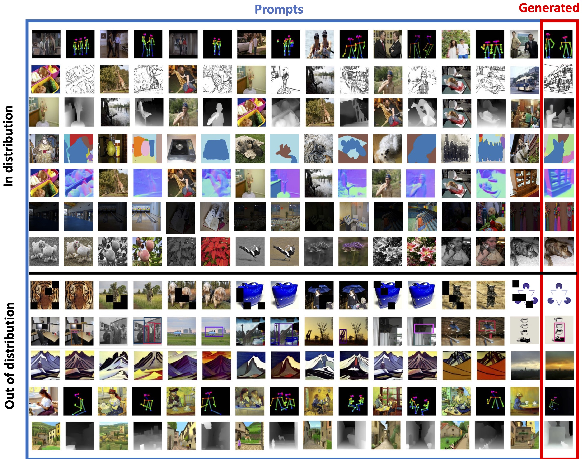
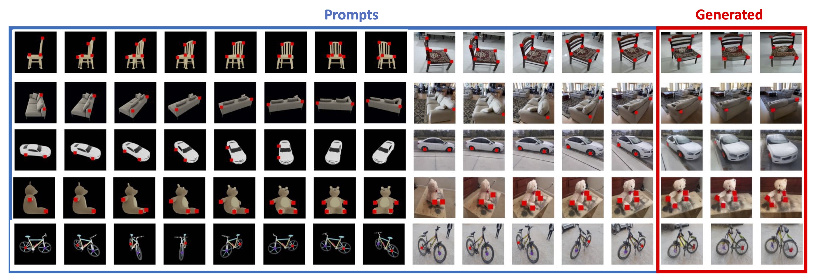

We introduce a novel sequential modeling approach which enables learning a Large Vision Model (LVM) without making use of any linguistic data.
To do this, we define a common format, "visual sentences", in which we can represent raw images and videos as well as annotated data sources such as semantic segmentations and depth reconstructions without needing any meta-knowledge beyond the pixels.
Once this wide variety of visual data (420 billion tokens) is represented as sequences, the model can be trained to minimize cross-entropy loss for next token prediction.
By training across various scales of model architecture and data diversity, we provide empirical evidence that our models scale effectively.
Many different vision tasks can be solved by designing suitable prompts at test time.
Figure 1. Visual Sentence allow us to format diverse vision data into the unified structure of image sequences.
Figure 2. Training loss for the 300M, 600M, 1B, and 3B models. All models are trained on 420B tokens, which correspond to 1.64B images. The training scales well with model sizes.
Figure 3. Larger LVMs perform better on downstream tasks. We evaluate LVMs of varying sizes on 4 different downstream tasks, following the 5 shot setting on the ImageNet validation set and report the perplexity. We find that perplexity decreases with larger models across all tasks, indicating the strong scalability.
Figure 4. We evaluate the perplexity of 4 models trained on different sub-components of our datasets on tasks using the ImageNet validation set. All models are 3B parameters and all evaluations are conducted in the 5-shot setting. We can see that the model benefits from each single images, videos and annotations, demonstrating the importance of our training dataset diversity.
Frame predictions. LVM predicts the next frame (marked in red) given previous video frames as prompt. The results reveal the LVM can predict the video frames while considering dynamic objects and camera motion.
In and out of distribution prompting examples. Every row is a prompt that contains a sequence of images interleaved with annotations, followed by a query. The last image is predicted by the model (marked in red). The last 5 rows show examples where the query image is out of distribution (painting, sketch, etc) for the task it was trained for.
Compositing & novel tasks. compositing several tasks together within a single prompt. Here, we demonstrate the rotation task together with the novel key- point correspondence task and request the model to continue the pattern.
Tasks that are not always easily describable in language
Non-verbal IQ tests.
A variety of simple vision tasks, such as object replication (top), relighting (middle), and zooming in (bottom), can be simply specified via a suitably chosen visual sentence prompt that expresses the task to the LVM